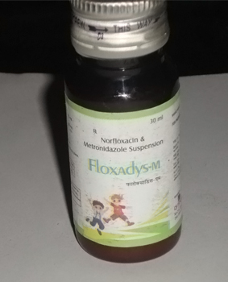

Indications:-Trichomoniasis and Urinary Tract Infections(UTI's).
- 
Norfloxacin Plus Metronidazole suspension

Norfloxacin + Metronidazole
SUSPENSION PRESENTATION:
Each 5 ml contains:
Norfloxacin IP 100mg
Metronidazole IP 120 mg

Norfloxacin Plus Metronidazole suspension: :
Norfloxacin
Norfloxacin is a synthetic chemotherapeutic antibacterial agent occasionally used to treat common as well as complicated urinary tract infections and also used to treats gonorrhea. Norfloxacin is in a class of antibiotics called fluoroquinolones. It works by killing bacteria that cause infections.
Metronidazole
Metronidazole is a nitroimidazole antibiotic medication used particularly for anaerobic bacteria and protozoa. It is used to treat infections caused by certain bacteria. It is most commonly used for abdominal, vaginal, and intestinal infections. Metronidazole works by killing bacteria.
It has been demonstrated by recent studies concomitant administration of Norfloxacin and Metronidazole, shows better symptoms relief compared with modest improvement of urinary tract infections vaginal, and intestinal infections.

- Widely used in uncomplicated and complicated urinary tract infections (including cystitis).
- This suspension is used for Treatment of Diarrhoea caused by E.coli, samonella and shigella.
- Trichomoniasis (a sexually transmitted infection caused by a parasite).
- Certain infections, such as amebic dysentery or amebic liver abscess, caused by an amoeba (a certain type of parasite.
It is also used to treat the following kinds of infections:

Norfloxacin inhibition of the enzymes topoisomerase II (DNA gyrase) and topoisomerase IV, which are required for bacterial DNA replication, transcription, repair, and recombination. Metronidazole is bactericidal. The activity of metronidazole against Trichomonas, amoebae and Giardia is also likely to be attributable to disruption of existing DNA and inhibition of its synthesis in those organisms. Metronidazole is selectively taken up by anaerobic bacteria and sensitive protozoal organisms because of the ability of these organisms to reduce metronidazole to its active form intracellularly.

BEFORE TAKING THIS SUSPENSION OF NORFLOXACIN AND METRONIDAZOLE TELL YOUR DOCTOR ABOUT ANY MEDICAL PROBLEMS AN ALLERGIES THAT CHILD HAS NOW OR HAS HAD.
This suspension is a combination of Norfloxacin and Metronidazole and has unique dual mode of action i.e., in this combination, Norfloxacin used for Treatment of Diarrhoea caused by E.coli, salmonella. Metronidazole used to cure various infections which is caused by anaerobic bacteria like Abdomen (stomach), Skin, Blood. Acute psychoses when metronidazole co-administered with disulfiram. It has additive effect with other antimicrobials. Blood levels increased by cimetidine. Antacids reduce absorption of norfloxacin from GIT.
Potentially Fatal: Disulfiram-like reaction when metronidazole is administered with alcohol. Enhances action of coumarin anticoagulants. Norfloxacin raises theophylline and cyclosporin levels. Effects of warfarin are potentiated. Probenecid reduces urinary excretion of norfloxacin

- Skin rash
- Headache
- Skin rashes
- Dizziness
- Nausea

- Caution when used during pregnancy
- Contraindicated in lactation
- Hypersensitivity
- Neurological disease

Store in a well closed container in cool, dry place, away from direct heat and light.

From the above discussion, it can be concluded that this Norfloxacin and Metronidazole suspension could improve the quality of life of patients with urinary tract infections and Diarrhoea.
We are making superior quality of Norfloxacin and Metronidazole Suspension that is used for Treatment of Diarrhoea caused by E.coli, samonella and shigella and urinary tract infections. Our offered suspension is processed using high grade chemical compounds and other required drugs by our experienced quality controllers that ensure its quality, purity and chemical properties. Highly treasured among the clients for its reliability, accurate composition, excellent physical and purity, this suspension is offered to our esteemed clients at the market leading prices.